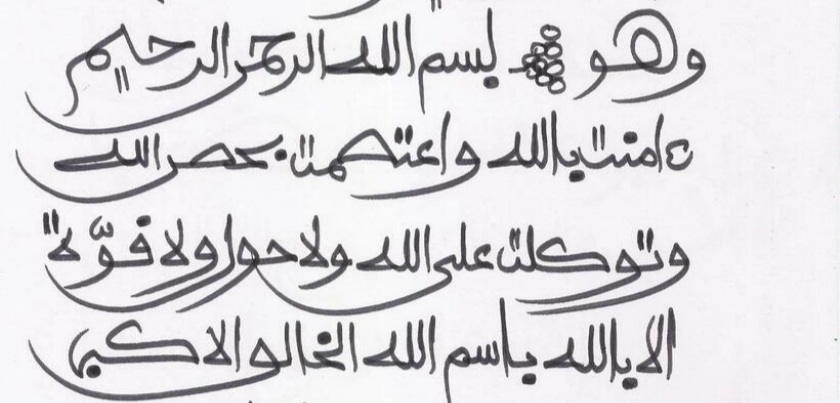
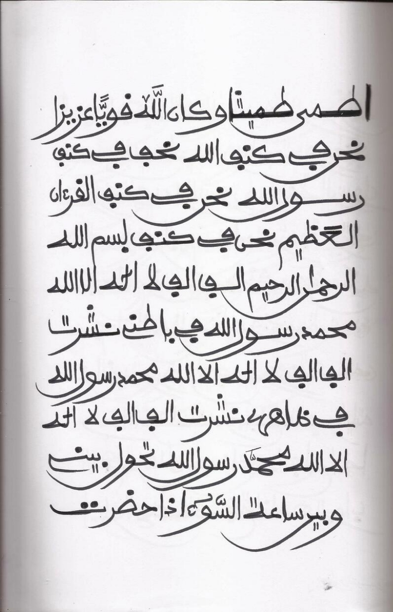
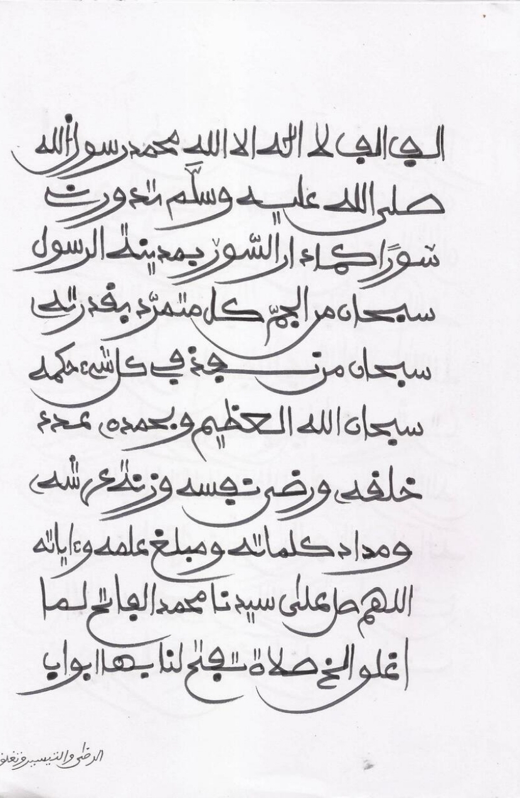
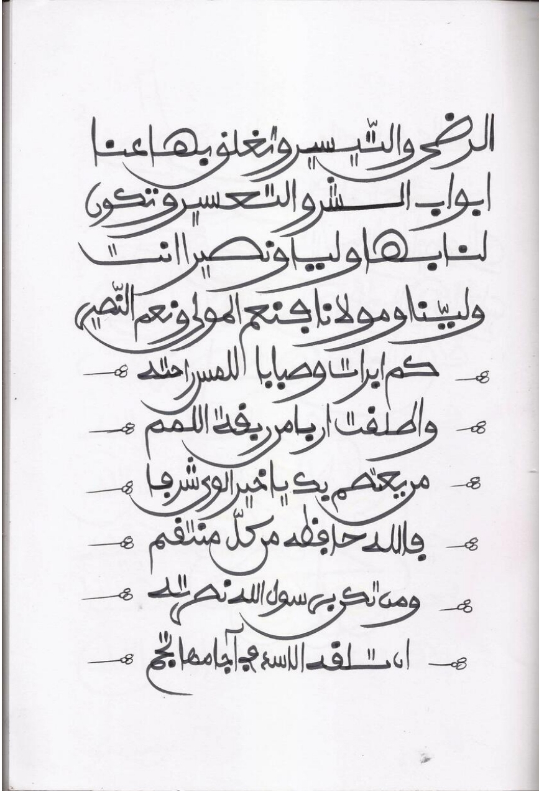
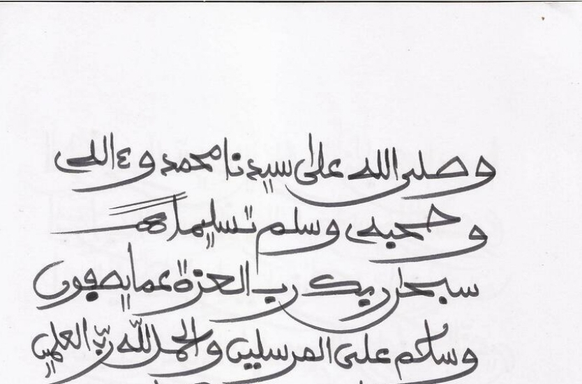

Wannan sirrin mai suna Hisbul Bahar sirrine na kariya wanda aka ruwaito shi daga muridan maulan mu Ahmadu tijjani sun tabbatar wa duniya cewa wannan sirrin Sirrine mai karfi kuma kariya ne sosai yana kuma bude kofofin jalabin mutum karanta shi akeyi kullum kamar yadda kuke ganin addu'ar a hoto, na samu wannan sirrin ta hannun Mallam adamu RTA.

Wasu daga cikin Almajiran shehu sukace iya nan yake tsayawa wasu kuma sukace A'a yana ci gaba da sauran addu'ar kamar yadda kuke gani




Indai zaka dinga karanta wannan sirrin full dinshi wallahi zaka sha mamaki ga wayanda bazasu iya karantawa ba, zasu iya sauraran Audio ta nan Adduar Hisbul Bahar (Zuwa yanzu bamu daura audio ba amma an jima ko gobe in Allah ya kaimu Zamu daura)
By Muawiya Muzzy | 25 Feb 2025
All Right Reserved